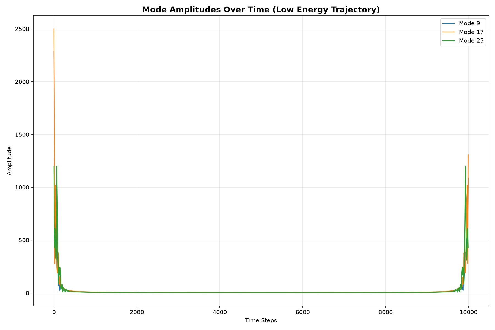

FPU Heteroclinic Analysis
System Description
The Fermi-Pasta-Ulam-Tsingou problem models a 1D chain of masses connected by nonlinear springs. We investigate energy transfer mechanisms through numerical integration.
Key Findings
- Energy Trapping: Low-energy modes trap energy locally, forming stable periodic orbits.
- Energy Escape: Higher-energy modes undergo rapid dissipation and escape to the continuum.
- Heteroclinic Connections: There exists a pathway connecting low-energy and high-energy states via intermediate energy transfers.
Visualization

